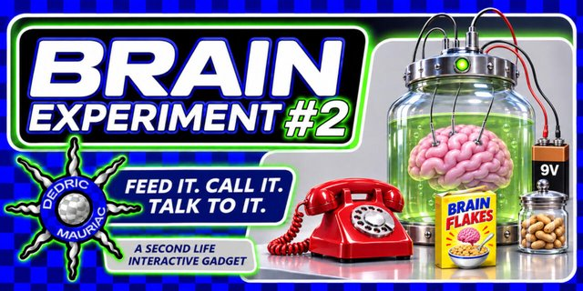

Brain Experiment #2
Talk to a brain in a jar

A brain in a jar you can feed and talk to in Second Life, later wired to a Pandorabots ALICE chatbot through a retro phone.
Executive summary
Why it exists
Inspired by "Look Around You: The Brain", a parody in which a brain in a jar phones a scientist to say how many nuts are in a jar. I built it as a display to make people laugh.
Outcome
It started as a joke and became a working chatbot you could call.
My role
Author.
Technical overview
How it works
A display with a brain in a jar. Touching different parts gives different responses from the brain. Touching the phone starts and stops a session with the brain through Pandorabots.com, which runs ALICE-based chatbots.